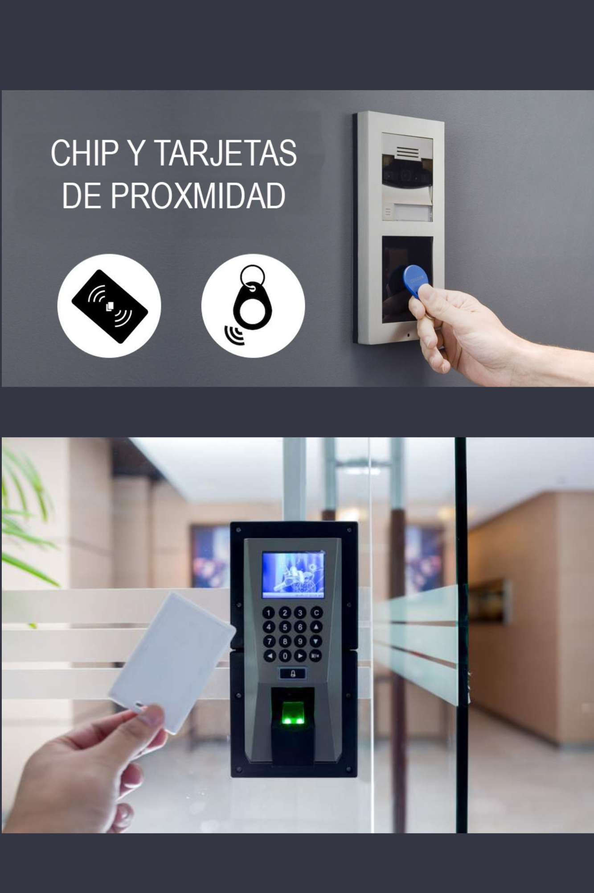
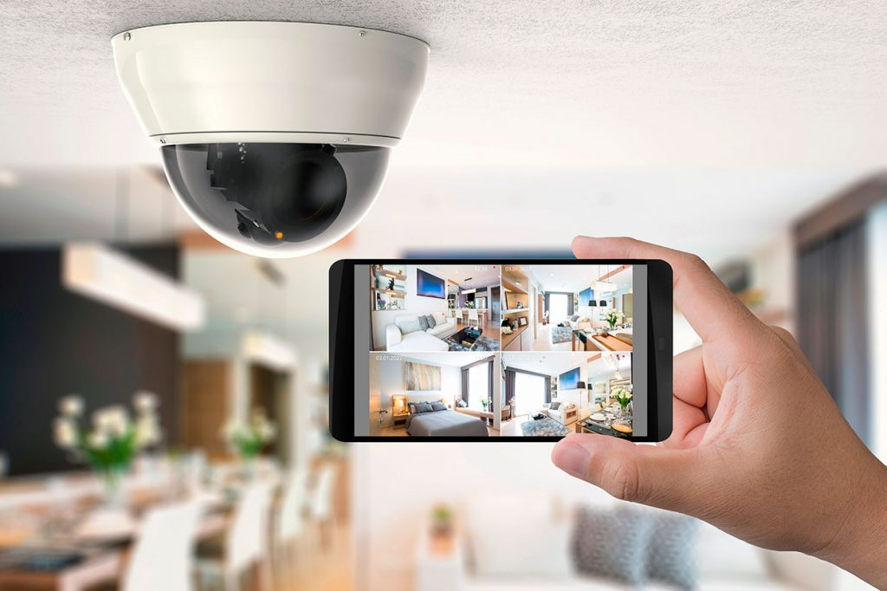
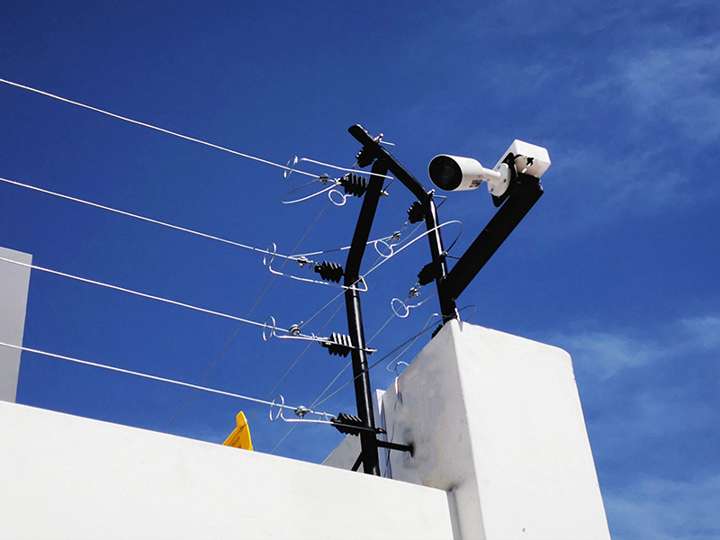
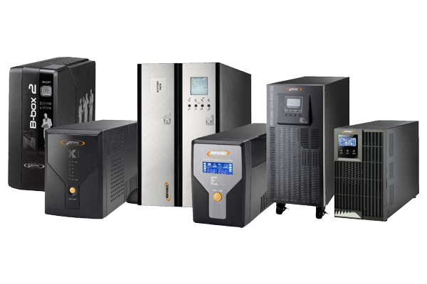

Ofrecemos diferentes servicios que pueden brindarte una buena solución.

Transporte vertical
Realizamos todo tipo de mantenimiento, reparación, modernización e instalación de todo tipo de transporte vertical, de carga, plataformas de elevación de sillas de ruedas, tablero de control, cables viajerosy de tracción, variador de velocidad, finales de carrera, señalización según norma, embellecimiento de cabina, cambio de pisos, encamisado de puertas, pintura general, etc. Se realiza en edificios que estén en proceso de construcción, ya estructurados y/o grupo tractor e hidráulicos.
Adicional trabajamos realizando mantenimiento a distintas marcas reconocidas como Schindler, Sigma, Otis, ThyssenKrupp y Mitsubishi

Controles de acceso
Se realiza el suministro, instalación, mantenimiento y reparación de controles de acceso en conjuntos residenciales, empresas y entidades públicas; esto mplica proporcionar soluciones integrales para garantizar la seguridad y el control de acceso en diversos entornos. Esta actividad implica una serie de tareas y responsabilidades, que pueden incluir:
- Implementación física de dispositivos de control de acceso, como lectores de tarjetas, cerraduras electrónicas, torniquetes y/o sistemas biométricos.
- Suministro de los dispositivos y equipos necesarios para el control de acceso, tales como lectores de tarjetas, tarjetas de identificación, cerraduras electrónicas, software de gestión de acceso, entre otros.
- Es crucial para garantizar el funcionamiento óptimo y la seguridad continua del sistema de control de acceso. Esto incluye inspecciones periódicas, ajustes, reparaciones y actualizaciones de software para mantener la eficiencia y la seguridad del sistema a lo largo del tiempo.

Puertas automáticas
las puertas automáticas son sistemas que facilitan el acceso controlado a diferentes espacios, ya sea en residencias, comercios o edificios públicos. Se realiza el suministro de todo tipo de mandos para instalación, mantenimiento, reparación y embellecimiento de puertas vehiculares y acceso peatonal.

Cámaras de seguridad
La instalación de cámaras y sistemas de seguridad comienza con una evaluación minuciosa del área a cubrir, identificando los puntos clave para su ubicación estratégica. Posteriormente, se seleccionan las cámaras adecuadas en función de las necesidades del lugar, considerando aspectos como la resolución de imagen, la capacidad de visión nocturna y la cobertura requerida. Luego, se procede con la instalación física de las cámaras, asegurando su correcto posicionamiento y orientación para una óptima vigilancia. Una vez instaladas, se lleva a cabo la configuración de los sistemas de seguridad, incluyendo la conexión a una red de monitoreo si es necesario. En cuanto al mantenimiento, se realiza un seguimiento regular del funcionamiento de las cámaras, realizando inspecciones periódicas para detectar y corregir posibles fallos o deterioros. Esto incluye la limpieza de lentes y carcasas para garantizar una calidad de imagen óptima, así como la verificación de las conexiones y cables para asegurar su integridad. Además, se actualizan los sistemas de seguridad según sea necesario para mantenerse al día con las últimas tecnologías y garantizar la protección continua del área vigilada.

Cercas eléctricas
La instalación de cercas eléctricas perimetrales implica la evaluación detallada del perímetro a proteger y la selección adecuada de los dispositivos según las necesidades de seguridad específicas del área. Una vez determinada la ubicación óptima, se procede con la instalación física de las cercas eléctricas, asegurando su correcta disposición y conexión a una fuente de energía. Durante este proceso, se presta especial atención a la configuración de las ceras para garantizar su eficacia en la detección de intrusos y la activación de alarmas en caso de violación del perímetro.
En cuanto al mantenimiento, se llevan a cabo inspecciones regulares de las ceras eléctricas para detectar posibles fallos en su funcionamiento, así como para verificar la integridad de los cables y conexiones. Además, se realiza un mantenimiento preventivo que incluye la limpieza de los dispositivos y la calibración periódica de sus sensores para asegurar un rendimiento óptimo. Cualquier anomalía detectada se aborda de manera inmediata para garantizar la continuidad de la seguridad perimetral proporcionada por las ceras eléctricas.

Mantenimiento UPS
La instalación, suministro y mantenimiento de UPS (Sistemas de Alimentación Ininterrumpida) constituye un servicio esencial para garantizar la continuidad del suministro eléctrico en diversos entornos. La instalación implica la evaluación meticulosa de las necesidades específicas del cliente y la selección de la UPS más adecuada en cuanto a capacidad y configuración. Durante esta etapa, se realiza la conexión eléctrica y se implementan las medidas de seguridad necesarias. El suministro incluye la entrega o adquisición de la UPS, asegurando la disponibilidad oportuna de los equipos requeridos. Por último, el mantenimiento implica inspecciones periódicas, pruebas de funcionamiento y ajustes necesarios para garantizar el rendimiento óptimo de la UPS a lo largo del tiempo, minimizando así el riesgo de interrupciones en el suministro eléctrico y protegiendo los equipos sensibles ante posibles fallos de energía.